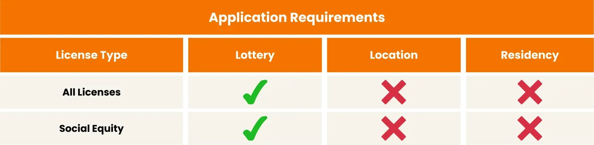
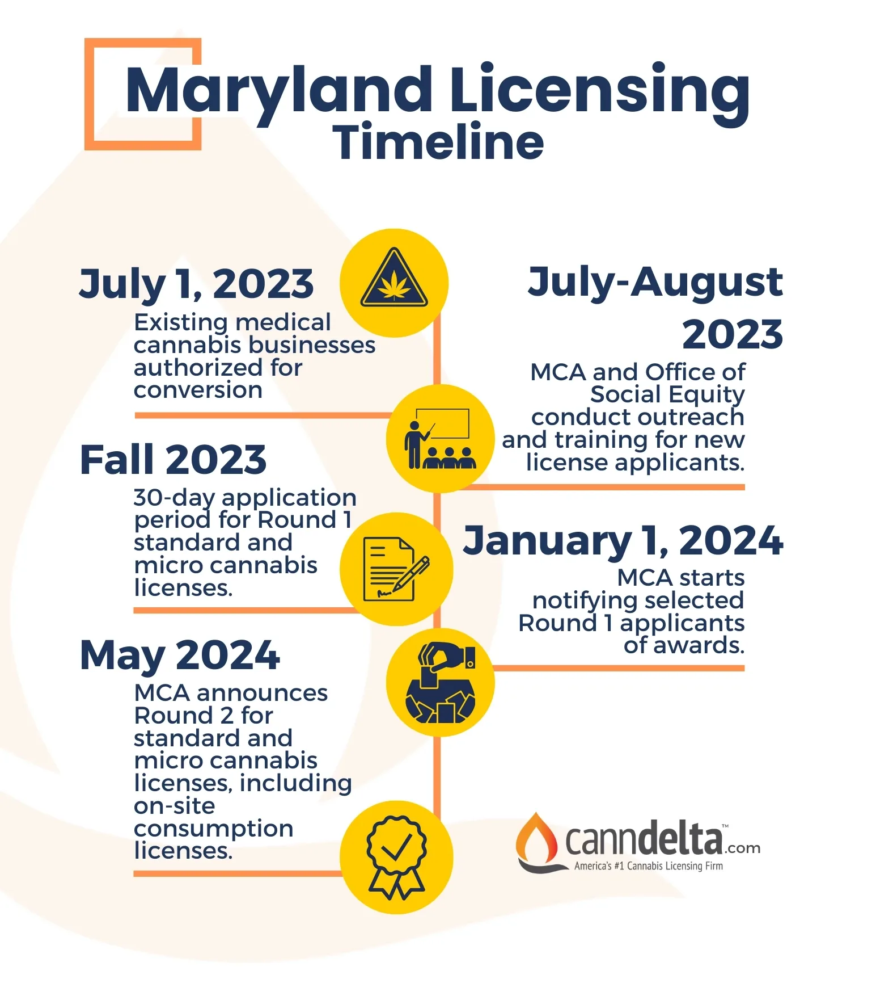
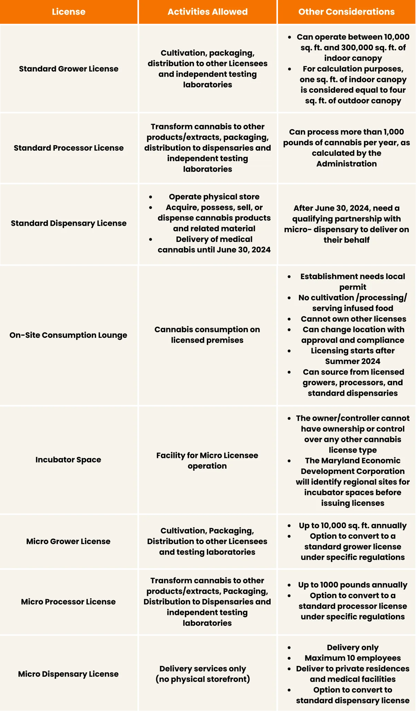
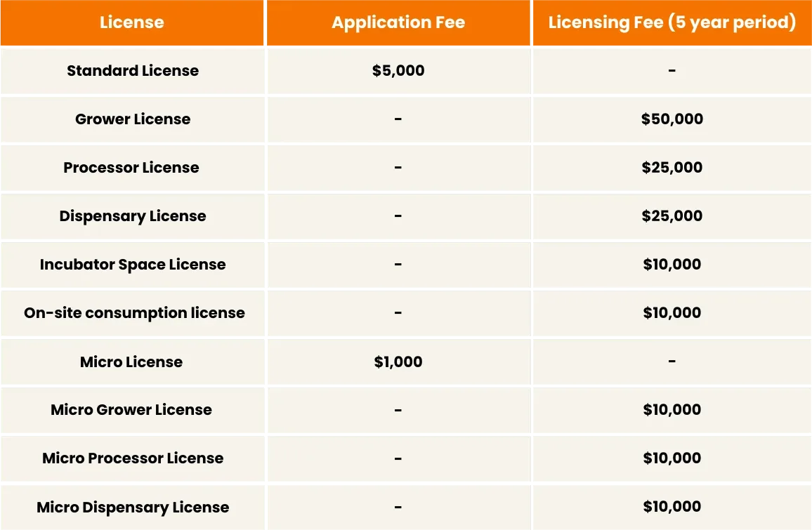

Fee Reductions for Social Equity Businesses
- Discounted Fees:
- Licensed social equity businesses receive a 50% reduction in licensing fees for each license type.
Missouri’s Final Microbusiness Lottery is Coming: 48 Licenses Up for Grabs
The state is hosting educational forums right now, and the Round 3 window opens later this year. With strict new pre-issuance vetting rules, winning the draw is only half the battle. CannDelta will secure your application to ensure you keep your license.
Missouri’s Final Microbusiness Lottery is Coming: 48 Licenses Up for Grabs
The state is hosting educational forums right now, and the Round 3 window opens later this year. With strict new pre-issuance vetting rules, winning the draw is only half the battle. CannDelta will secure your application to ensure you keep your license.
USA

Round 1 Applicant Criteria: All Round 1 applicants must be social equity applicants, owning at least 65% of the business and meeting specific criteria related to residence, education, or impact by cannabis enforcement policies.

Understanding the different types of cannabis licenses available in Maryland is crucial for prospective applicants. Here’s a detailed breakdown of each license type and the specific activities they encompass:

Lottery Award System

Maryland’s cannabis industry is committed to promoting social equity and positively impacting communities.
For cannabis businesses in Maryland, compliance with state regulations is not just a one-time effort but an ongoing commitment. Understanding and adhering to these requirements is essential for maintaining licensure and operating successfully. Here’s what licensees need to know:
Licensing Compliance
The MCA will contact all license winners with additional information and next steps following the draw. The MCA will conduct a final review of each application before distributing conditional licenses.
The next round of license application round is expected to take place summer 2024, however there is no official date. The MCA is required to announce any application period 60 days before the beginning of the 30-day application period.
The MCA will issue a maximum of the following license in the second application period:
For standard licenses:
For micro licenses:
The MCA will not charge an application fee for first round applicants who met the minimum qualifications but were not selected in the lottery, provided they apply for the same license type (Standard or Micro) in the next round. These applicants may choose to apply in a different location or region than the one they selected during the first licensing round.
If you met the minimum requirements in the first round, the MCA will reach out to the primary contact on your application to determine whether the applicant(s) want to be included in the second round and to alert the applicant(s) of any additional application requirements.
Are you ready to navigate the Minnesota cannabis licensing landscape? Whether you're starting a new venture or expanding your existing business, understanding the complexities of the process is crucial. If you need guidance or have questions about the licensing process, CannDelta is here to help. Our team of experts offers tailored support to navigate these regulations and ensure your business is set up for success.
USA